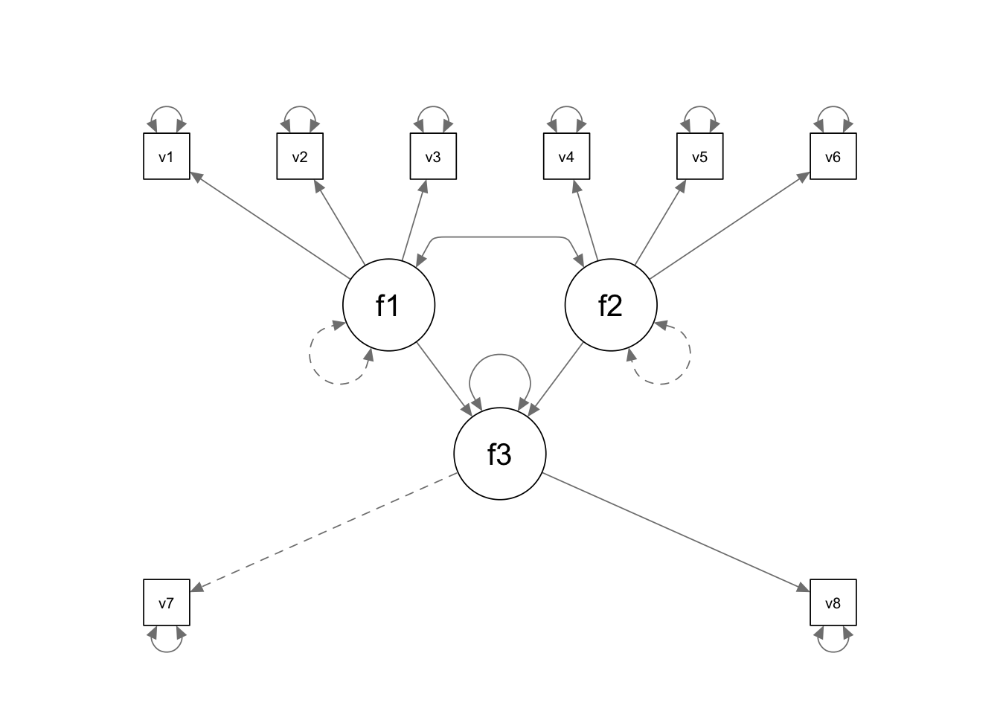

In this tutorial, we are going to use lavaan and simsem for SEM power analysis based on Monte Carlo methods.
library(lavaan)
library(simsem)
library(semPlot)In this example, we would like to conduct power analysis for a latent variable path analysis model. The parameters of focal interest are the path coefficients and the covariance between the two exogenous latent variables.

We first use the lavaan model syntax to define our population model and supply all the parameter values. To supply the population value of a parameter, we just need to multiply the parameter with the numeric value.
popmodel <- '
# measurement model
f1 =~ 0.5*v1 + (-0.7)*v2 + 0.6*v3
f2 =~ 0.8*v4 + 0.9*v5 + (-0.6)*v6
f3 =~ 0.938*v7 + 0.964*v8
# error variances
v1 ~~ .75*v1
v2 ~~ .51*v2
v3 ~~ .64*v3
v4 ~~ .36*v4
v5 ~~ .19*v5
v6 ~~ .64*v6
v7 ~~ .12*v7
v8 ~~ .07*v8
# factor (error) variances
f1 ~~ 1*f1
f2 ~~ 1*f2
f3 ~~ 0.77*f3
# structural path coefficients
f3 ~ 0.2*f1 + 0.5*f2
# covariance
f1 ~~ (-0.3)*f2
'Next we use the lavaan model syntax to define the analysis model. This is the model syntax you would write as if you have a data set at hand (we are very familiar with it already). The analysis model does not necessarily have to be the same as the population model.
Analyze.model <- '
f1 =~ NA*v1 + v2 + v3
f2 =~ NA*v4 + v5 + v6
f3 =~ 0.938*v7 + v8
v1 ~~ v1
v2 ~~ v2
v3 ~~ v3
v4 ~~ v4
v5 ~~ v5
v6 ~~ v6
v7 ~~ v7
v8 ~~ v8
f1 ~~ 1*f1
f2 ~~ 1*f2
f3 ~~ f3
f3 ~ f1 + f2
f1 ~~ f2
'Last, we call up the sim() function available in the simsem R package. This function will automatically generate multiple copies of data based on the population model and fit the analysis model to the simulated data. It will output the results summarized over replications.
For this example, we request sim() to generate 1000 copies of data, each has a sample size of 303. We also request sim() to use lavaan’s sem() function when fitting the analysis model to the simulated data. For more detailed information about the simsem package, please refer to its webpage.
Output <- sim(1000, Analyze.model, n = 303, generate = popmodel, lavaanfun = "sem")summary(Output)## RESULT OBJECT
## Model Type
## [1] "lavaan"
## ========= Fit Indices Cutoffs ============
## Alpha
## Fit Indices 0.1 0.05 0.01 0.001 Mean SD
## chisq 24.665 28.256 33.828 48.013 17.338 5.943
## aic 5942.599 5966.065 6002.810 6034.307 5855.615 68.159
## bic 6013.160 6036.626 6073.371 6104.868 5926.176 68.159
## rmsea 0.039 0.047 0.057 0.078 0.013 0.017
## cfi 0.993 0.989 0.983 0.972 0.998 0.004
## tli 0.988 0.982 0.973 0.955 1.000 0.009
## srmr 0.037 0.041 0.046 0.057 0.028 0.007
## ========= Parameter Estimates and Standard Errors ============
## Estimate Average Estimate SD Average SE Power (Not equal 0) Std Est Std Est SD
## f1=~v1 0.493 0.069 0.069 1.000 0.494 0.063
## f1=~v2 -0.702 0.077 0.075 1.000 -0.704 0.066
## f1=~v3 0.600 0.072 0.071 1.000 0.601 0.062
## f2=~v4 0.800 0.054 0.053 1.000 0.801 0.031
## f2=~v5 0.899 0.052 0.051 1.000 0.900 0.029
## f2=~v6 -0.598 0.056 0.055 1.000 -0.599 0.042
## f3=~v8 0.964 0.065 0.060 1.000 0.965 0.030
## v1~~v1 0.747 0.076 0.074 1.000 0.752 0.062
## v2~~v2 0.497 0.094 0.090 0.988 0.501 0.093
## v3~~v3 0.630 0.079 0.079 1.000 0.635 0.075
## v4~~v4 0.356 0.047 0.047 1.000 0.358 0.050
## v5~~v5 0.189 0.050 0.048 0.959 0.190 0.052
## v6~~v6 0.635 0.056 0.057 1.000 0.639 0.050
## v7~~v7 0.117 0.054 0.050 0.645 0.118 0.056
## v8~~v8 0.068 0.056 0.052 0.301 0.069 0.057
## f3~~f3 0.767 0.092 0.086 1.000 0.765 0.052
## f3~f1 0.196 0.071 0.071 0.792 0.196 0.070
## f3~f2 0.498 0.069 0.068 1.000 0.498 0.057
## f1~~f2 -0.296 0.075 0.071 0.971 -0.296 0.075
## Std Ave SE Average Param Average Bias Coverage
## f1=~v1 0.061 0.500 -0.007 0.948
## f1=~v2 0.064 -0.700 -0.002 0.955
## f1=~v3 0.061 0.600 0.000 0.947
## f2=~v4 0.031 0.800 0.000 0.942
## f2=~v5 0.028 0.900 -0.001 0.942
## f2=~v6 0.042 -0.600 0.002 0.950
## f3=~v8 0.028 0.964 0.000 0.940
## v1~~v1 0.060 0.750 -0.003 0.941
## v2~~v2 0.090 0.510 -0.013 0.951
## v3~~v3 0.074 0.640 -0.010 0.947
## v4~~v4 0.049 0.360 -0.004 0.938
## v5~~v5 0.050 0.190 -0.001 0.954
## v6~~v6 0.050 0.640 -0.005 0.944
## v7~~v7 0.051 0.120 -0.003 0.951
## v8~~v8 0.053 0.070 -0.002 0.952
## f3~~f3 0.051 0.770 -0.003 0.931
## f3~f1 0.070 0.200 -0.004 0.946
## f3~f2 0.057 0.500 -0.002 0.948
## f1~~f2 0.071 -0.300 0.004 0.933
## ========= Correlation between Fit Indices ============
## chisq aic bic rmsea cfi tli srmr
## chisq 1.000 0.074 0.074 0.924 -0.903 -0.998 0.715
## aic 0.074 1.000 1.000 0.086 -0.077 -0.072 0.028
## bic 0.074 1.000 1.000 0.086 -0.077 -0.072 0.028
## rmsea 0.924 0.086 0.086 1.000 -0.934 -0.924 0.649
## cfi -0.903 -0.077 -0.077 -0.934 1.000 0.898 -0.606
## tli -0.998 -0.072 -0.072 -0.924 0.898 1.000 -0.718
## srmr 0.715 0.028 0.028 0.649 -0.606 -0.718 1.000
## ================== Replications =====================
## Number of replications = 1000
## Number of converged replications = 874
## Number of nonconverged replications:
## 1. Nonconvergent Results = 0
## 2. Nonconvergent results from multiple imputation = 0
## 3. At least one SE were negative or NA = 0
## 4. Nonpositive-definite latent or observed (residual) covariance matrix
## (e.g., Heywood case or linear dependency) = 126